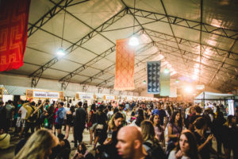
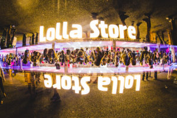
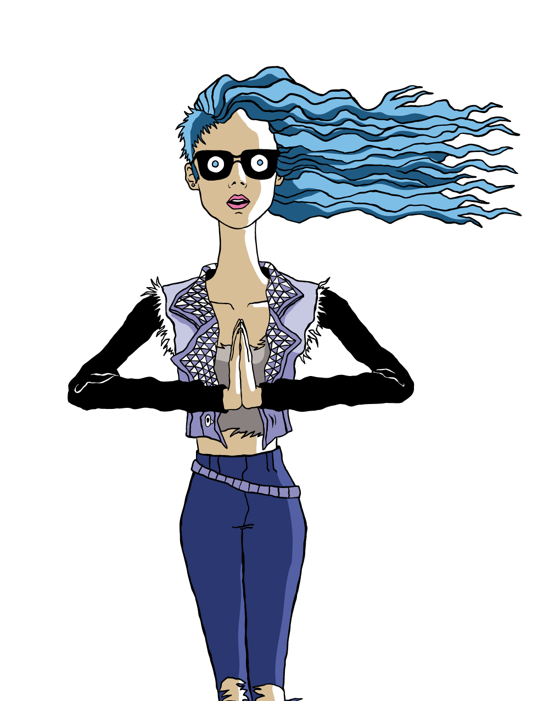

A maratona sonora foi apenas uma parte do festival. Relembre tudo o que rolou na edição 2018 do Lollapalooza Brasil no nosso site e nas redes sociais: Facebook, Youtube, Twitter e Instagram.



Quem já foi ao Lollapalooza Brasil sabe: a experiência por aqui vai muito além da música. Como gosta de dizer o criador do festival, Perry Farrell, o Lolla é um “estilo de vida alternativo”. E todo mundo pode viver isso nos mais variados espaços pelo Autódromo de Interlagos. Áreas de descanso, brinquedos, food trucks e muito mais para que todos os momentos fiquem para sempre na memória.
